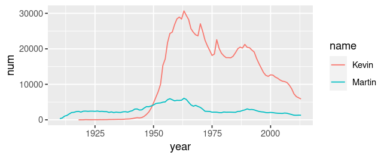

Install some packages install.packages("bigrquery","tidyjson") (It is assumed you have the tidyverse package, which includes the packages glue and rvest. Check in the Packages tab that you have rvest Version 1.0.4. If not, update. )
This tutorial
Shows you ways to retrieve data from the internet
Starts from practical problems
Is really hands-on to reach a solution. Try to follow along!
Makes some inputs to discuss background knowledge
Disclaimer: I am not an specialist! I showcase how to approach retrieval problems with limited knowledge using the right mix of searching, learning, trial and error analysis, and endurance.
Ask questions!
The three problems
Retrieve USA baby names from Google Cloud BigQuery using SQL
Make a plot showing the popularity of two names
Retrieve Profile and Social Network data from GitHub using the API and extracting from JSON
Compare the number of followers of a user to the number of followers of a user’s following
Retrieve distributions of movie ratings from IMDb and letterboxd using HTML/CSS scraping with rvest
Compare how the distributions for Barbie and Oppenheimer (2023) differ on the two platforms
Problem 1: USA baby names from Google Cloud BigQuery (SQL)
Google Cloud BigQuery Public Datasets
We use the Google Cloud Platform which offers several cloud computing services based on Google’s infrastructure.
There is a sandbox mode which does not require anymore than a Google Account. (No Free Trial registration or Credit Card Details necessary) https://console.cloud.google.com/bigquery
Google Cloud BigQuery Sandbox
There is a sandbox mode which does not require anymore than a Google Account. No Free Trial registration or Credit Card Details necessary.
Click on “Create Project”. Leaving the default specification. Create the project.
Go to the “SQL workspace” (if you are not already there)
In the “Explorer” click “Add Data”, select “Public Datasets”, search for “usa names”, click on the data set “USA Names”, and then “View Dataset”.
The bigquery-public-data should appear in the Explorer.
Use pressing the triangle to navigate the hierarchy in the Explorer. Go to the dataset usa_names and then click on its table usa_1910_2013. To the right should appear a tab with information about the table.
presents data to users in the form of a collection of tables with rows and columns, and
provides relational operators to manipulate the data in tabular form.
SQL is somehow a standard but may come in different flavors
Some call it “S,Q,L”, other “SEQUEL”
Input: Database = data frame?
Tables in a database are indeed essentially the same as data frames in R, or python-pandas.
What is the different use cases?
SQL databases are
for storing and querying large amounts of data
often being access through a network
often so large to be distributed over several severs
The data frames in our data science tools are for smaller datasets to manipulate and analyze then within a programming environment and typically in memory.
Let’s do a SQL query on USA Names!
On the BigQuery interface The tab for the table usa_1910_2013 shows
The table Schema which shows names and data types of the columns.
What are the columns in USA Names?
Some Details about the data in the table: Metadate and data about Storage
A preview of the first rows of the table
Select “Query” –> “In split tab” to open a new tab for our query.
We want to extract the numbers of babies with the name “Kevin” for each year in the whole USA.
Copy this query
SELECTyear, sum(number) AS numFROM `bigquery-public-data.usa_names.usa_1910_2013`WHERE name ="Kevin"GROUPBYyear
Click “Run” and explore the results.
Explanations
SELECTyear, sum(number) AS numFROM `bigquery-public-data.usa_names.usa_1910_2013`WHERE name ="Kevin"GROUPBYyear
Line 1 specifies what columns we want to have. It also specifies that we compute a new variable num which is the sum of number. To that end, we need some GROUP BY which comes later in Line 4.
Line 2 specifies the data table. Note the dot-notation with the database collection bigquery-public-data, the database usa_names, and the table usa_1910_2013
Line 3 specifies a filter
The line breaks are not relevant for the execution.
The UPPERCASE of the syntax words is not necessary and only a convention.
Query from R
Now, let’s do the same query from R using a copy of the script Tutorials/CollectingData_YOURNAME.R.
Load the package bigrquery
Execute the bq_auth() command (check the text in the comments)
Use this code
billing <-"blabla-380021"# This must be your project ID! sql <-"SELECT year, sum(numberFROM `bigquery-public-data.usa_names.usa_1910_2013`WHERE name = 'Kevin'GROUP BY year"tb <-bq_project_query(billing, sql)data <-bq_table_download(tb, n_max =100)
Important: Replace the billing string with your project ID. Find it clicking here
Plot the data in R
Now we can look at the evolution of the popularity of the name “Kevin” with
data |>ggplot(aes(year, num, color = name)) +geom_line()
Next challenge: Extract also the data for the name “Martin”. Hint: You need to add “Martin” (comma-separated) to the SELECT and add a condition with OR at the end of the WHERE. You also need to add name to the GROUP BY.

Learing SQL
Suppose we have the data frame usa_names in R or python. Then the same data wrangling operations are quite similar.
SQL
SELECTyear, sum(number) AS numFROM `bigquery-public-data.usa_names.usa_1910_2013`WHERE name ="Kevin"GROUPBYyear
Path: /path/to/resource (typically an html-file like index.html)
Query String: ?q=search+terms (optional component - it is used to pass additional data to the server, typically in the form of key-value pairs separated by &)
Fragment Identifier: #section-title (this is an optional component - it is used to identify a specific section or location within the resource that the URL points to)
HTML (Hypertext Markup Language): The essential language used for creating web pages and defining the structure and content of a website.
Almost all modern websites also include:
CSS (Cascading Style Sheets): Used for defining the visual style and layout of a website, including colors, fonts, and spacing.
JavaScript: Used to add interactivity and dynamic functionality to web pages, such as animations, form validation, and interactive user interfaces on the client (=user) side.
Input: Website description languages
Often CSS and JavaScript are loaded from external files specified in the html-file.
Exercise in the html “Page Source” find a link to a .css file and open it, find a link to a .js file and open it.
Common tools:
PHP: Server-side scripting language that is used for building dynamic websites and web applications, such as content management systems and e-commerce platforms.
SQL: This language is used for managing and manipulating data stored in a database, which is often used to power dynamic websites.
Example wordpress: When you call a wordpress-site like http://janlo.de/wp/index.php, the webserver of the site uses the PHP script to compile an html-page using data in an SQL-database and sends it back to your browser.
Now you have downloaded the JSON file, and read it into the R object user.
Explore this nested list object!
The tbl_json object is nested
For example: The Name of the user is at
user$`..JSON`[[1]]$name
Explanations
user is a list of 2 with the strange item name ..JSON we have to put it in backticks ` to access it with $.
user$`..JSON` is a list of one without named items. Seems quite useless here but maybe helpful when we have more users.
user$`..JSON`[[1]] is a list with all the items available for the user! So we can extract the name.
Extract the following of janlorenz
Look up the API url of the following of janlorenz from the object user
Produce it yourself as glue(https://api.github.com/users/{githubname}/following)
Use the code above to download the JSON of the following and read it into an object following.
We try to make a data frame df from the followers object followers using the tidyjson package. (Test: spread_all) following$..JSON[[1]] |> spread_all()
Code for number of following and followers
download.file(glue("https://api.github.com/users/{githubname}/following"), destfile =glue("{githubname}-following.json"))download.file(glue("https://api.github.com/users/{githubname}/followers"), destfile =glue("{githubname}-followers.json"))following <-read_json(glue("{githubname}-following.json"))following$`..JSON`[[1]]df_following <- following$`..JSON`[[1]] |>spread_all()followers <-read_json(glue("{githubname}-followers.json"))df_followers <- followers$`..JSON`[[1]] |>spread_all()df_following$logindf_following$login |>length() # Number of followingdf_followers$logindf_followers$login |>length()
Note: The maximum number of retrieved followers seems to be limited 30.
Can I get data from any site with APIs?
No.
The data of companies is their value. Although, many webservices use APIs, most of them have them private. For example
you cannot get things from Facebook
Twitter just closed the free research API which was quite popular among researchers
Netflix had an open one but closed it some time ago
reddit and github allow a bit
Even when an API is open, it often requires an API key, a token, you get with a user account. Sometimes you have to provide a reason and commit to not use it for commercial purposes. The company can also monitor how you use their API!
Even when an API is open, usually there are rate limits. After some amount of of usage your are cut of for a while or get banned.
Every API is different. Typically, access is with URLs (but which ones?) and the output is JSON (but how structured?)
Learning APIs and JSON
Watchout for packages wrapping API usage
Use packages to transform JSON to data frames
JSON is very nested so you need to learn to get used to fiddle around with nested data structures (lists of lists of lists …)
Beware, that APIs are often limited so you need some persistence to find out if something is feasible.
Project 3: Webscraping movie rating distributions from IMDb and letterboxd
The Internet Movie Database
IMDb is a very popular site with information about movies and TV shows including a \(1\bigstar - 10\bigstar\) user rating module.
Goal: We want to have the number of all star ratings for a movie in a vector.
IMDb has no public API. So we will try to scrape the data from the Website directly.